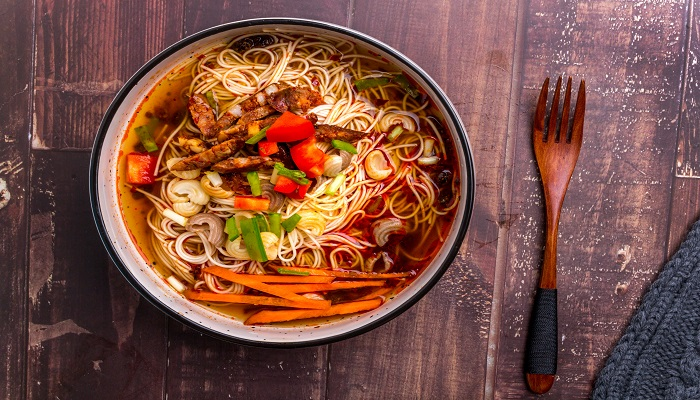
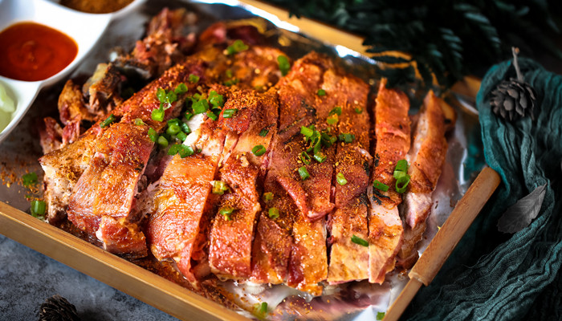
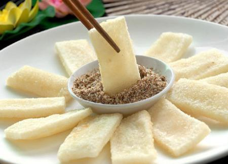
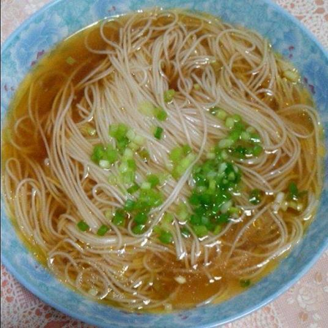
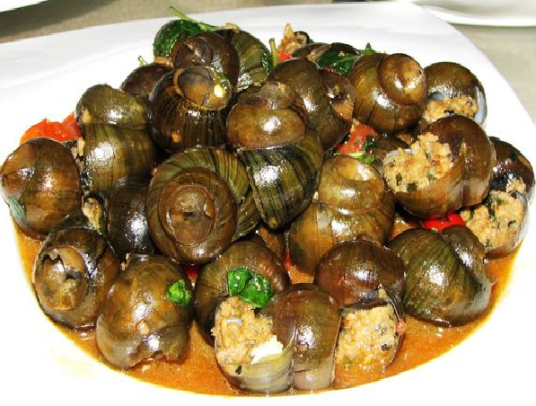

Taste of Guilin
Guilin's cuisine is a delightful blend of flavors shaped by its rich cultural heritage and abundant natural ingredients. From the iconic rice noodles to unique local specialties, every dish tells a story of this ancient city's culinary tradition. Explore the authentic flavors that have been cherished by locals and visitors for generations.

Guilin Rice Noodles
The most iconic dish of Guilin with a history spanning centuries. Made from premium early indica rice ground into a fine paste, pressed and steamed into round or flat noodles. Served with a rich aromatic broth and topped with crispy fried peanuts, pickled beans, and fresh herbs.
Must Try
Guilin Fermented Tofu
One of the Three Treasures of Guilin, this fermented tofu comes in five-spice and chili varieties. Known for its paper-thin skin, tender interior, and exquisite balance of sweet and savory flavors. The complex fermentation process creates a depth of flavor that enhances any meal.
Local Treasure
Water Ciba (Glutinous Rice Cake)
A traditional Guilin snack made from premium glutinous rice steamed and pounded into a smooth dough. Filled with sweet red bean paste, lotus seed paste, or sesame sugar for a delightful taste. When freshly dusted with sugar or roasted soybean flour, it becomes a silky-smooth delicacy.
Traditional
Nun Vegetarian Noodles
A unique Guilin specialty with over a century of history originating from a nun at Moon Hill. This dish features a remarkably fresh and savory vegetarian broth made from mountain mushrooms and bamboo shoots. Served with seasonal vegetables, it is simple yet profoundly flavorful and satisfying.
Vegetarian
Stuffed River Snails
A signature Yangshuo delicacy where large river snails are stuffed with minced pork, ginger, and aromatic herbs. The snails found in Yangshuo are exceptionally large, some reaching the size of ping-pong balls. The filling creates a flavor completely different from ordinary snail meat for a unique culinary experience.
Specialty
Gongcheng Oil Tea
A beloved traditional drink from Gongcheng County near Guilin made by roasting tea leaves with ginger and garlic. The ingredients are pounded into a paste and boiled with water to create a rich and savory flavor. Served with crispy rice crackers and peanuts, this hearty beverage is both warming and invigorating.
HeritageThe Art of Guilin Cuisine
Guilin cuisine is deeply rooted in the region's geography and ethnic diversity. Surrounded by mountains and rivers, the local ingredients are exceptionally fresh, from mountain mushrooms and wild herbs to river fish and seasonal vegetables. The city's culinary tradition blends Han, Zhuang, Yao, Miao, and Dong ethnic flavors into a unique gastronomic identity that cannot be found anywhere else in China.
Every dish reflects the philosophy of balancing nature's gifts with human creativity, resulting in flavors that are both honest and sophisticated, simple yet deeply satisfying.
Three Treasures
Guilin is famous for its Three Treasures: Fermented Tofu, Sanhua Wine, and Chili Sauce.
Ethnic Flavors
Zhuang, Yao, Miao, and Dong communities contribute diverse cooking traditions and ingredients.
Fresh Ingredients
Mountain-grown herbs, wild mushrooms, and river fish ensure every dish is naturally flavorful.
Street Food
West Street in Yangshuo offers an incredible array of local and international street food stalls.
Food Travel Tips
- Best Time to VisitSpring and autumn offer the freshest seasonal ingredients and pleasant dining weather
- Must-Visit SpotsWest Street in Yangshuo, Zhengyang Pedestrian Street in Guilin city center
- Local BreakfastStart your day with a bowl of Guilin Rice Noodles at any neighborhood shop
- Specialty SouvenirsGuilin Fermented Tofu, Sanhua Wine, and dried Longan make perfect food gifts
- Dining BudgetStreet food costs around 10-30 RMB per dish; restaurant meals range from 50-150 RMB per person
"Food is the best way to understand a city."
In Guilin, every meal is an invitation to experience the harmony between nature and culture, where ancient recipes meet the freshest ingredients from mountains and rivers.